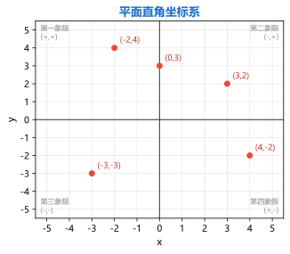
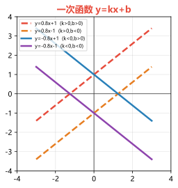
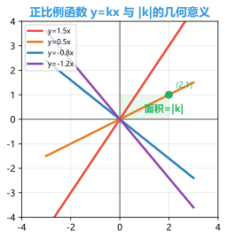
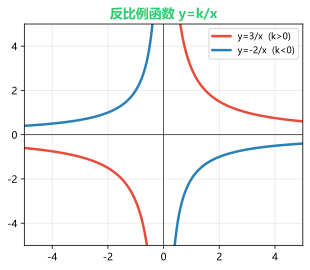
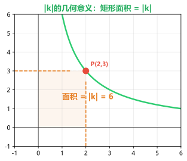
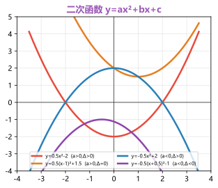
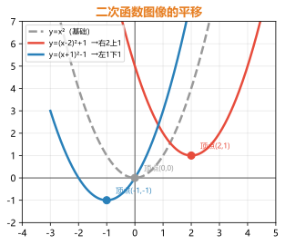
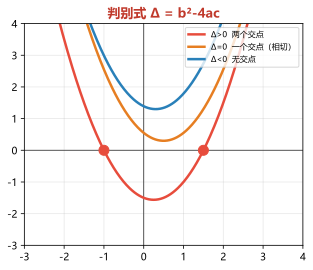
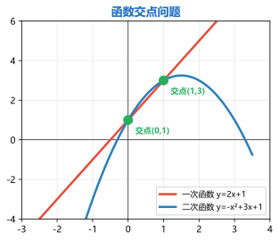

专题一：平面直角坐标系与函数基础
坐标系 · 点的坐标 · 函数概念
平面直角坐标系：在平面内画两条互相垂直、原点重合的数轴，水平的叫x轴（横轴），竖直的叫y轴（纵轴）。坐标平面被分为四个象限：
第一象限：(+, +) 右上方
第二象限：(-, +) 左上方
第三象限：(-, -) 左下方
第四象限：(+, -) 右下方
点的坐标特征：
• x轴上的点：纵坐标y = 0（记作(a, 0)）
• y轴上的点：横坐标x = 0（记作(0, b)）
• 原点：(0, 0)
• 关于x轴对称的点：(x, y) → (x, -y)（横坐标相同，纵坐标互为相反数）
• 关于y轴对称的点：(x, y) → (-x, y)（纵坐标相同，横坐标互为相反数）
• 关于原点对称的点：(x, y) → (-x, -y)（横纵坐标都互为相反数）
函数的概念：一般的，在一个变化过程中，有两个变量x和y，如果对于x的每一个确定的值，y都有唯一确定的值与其对应，那么就说x是自变量，y是x的函数。
• 函数的表示方法：解析式法、列表法、图像法
• 自变量取值范围：使解析式有意义（分母≠0、被开方数≥0等），同时符合实际意义

平面直角坐标系与各象限点的坐标特征
例题1：点A(-2, 3)在第几象限？点A关于x轴对称的点A'的坐标是什么？关于y轴对称的点A''的坐标是什么？关于原点对称的点A'''的坐标是什么？
解析：
点A(-2, 3)的横坐标为负、纵坐标为正 → 在第二象限。
关于x轴对称：横坐标不变，纵坐标取相反数 → A'(-2, -3)
关于y轴对称：纵坐标不变，横坐标取相反数 → A''(2, 3)
关于原点对称：横纵坐标都取相反数 → A'''(2, -3)
记忆口诀："关于谁对称谁不变，另一个变号；关于原点对称，全都变号"。
例题2：求下列函数中自变量的取值范围：
(1) y = 3x - 5
(2) y = 1/(x-2)
(3) y = √(x+1)
解析：
(1) y = 3x - 5：x取任意实数（整式函数无限制）→ x为全体实数。
(2) y = 1/(x-2)：分母≠0，x-2≠0 → x≠2。
(3) y = √(x+1)：被开方数≥0，x+1≥0 → x≥-1。
注意：若函数为y = 1/√(x-2)，需同时满足分母≠0且被开方数>0，即x-2>0 → x>2。
练习1：在平面直角坐标系中，点P(m+3, 2m-1)在y轴上，求m的值和点P的坐标。
答案：y轴上的点横坐标为0，所以m+3=0，m=-3。纵坐标2m-1=2×(-3)-1=-7。点P坐标为(0, -7)。
练习2：求函数 y = √(2x-4) 的自变量取值范围。
答案：2x-4 ≥ 0，2x ≥ 4，x ≥ 2。所以自变量x的取值范围是x ≥ 2。
专题二：一次函数 y = kx + b（k≠0）
斜率 · 截距 · 待定系数法 · 图像性质
一次函数的定义：形如 y = kx + b（k、b为常数，k≠0）的函数叫一次函数。当b=0时，y = kx 是正比例函数——正比例函数是特殊的一次函数。
一次函数的图像与性质：
k>0：直线从左到右上升（y随x增大而增大）
k<0：直线从左到右下降（y随x增大而减小）
b>0：直线与y轴交于正半轴（y轴截距为正）
b<0：直线与y轴交于负半轴（y轴截距为负）
|k|越大，直线越陡（倾斜程度越大）
一次函数与坐标轴的交点：
• 与y轴交点：(0, b)——令x=0，求出y=b
• 与x轴交点：(-b/k, 0)——令y=0，解kx+b=0，x=-b/k
待定系数法求解析式：
① 设函数解析式为 y = kx + b（k≠0）
② 将已知点的坐标代入解析式，列方程组
③ 解出k和b的值
④ 写出解析式

一次函数 y=kx+b 的图像——k决定增减性（升降），b决定y轴截距位置
例题3：一次函数 y = (2m-4)x + (3-m)的图像经过第一、二、三象限，求m的取值范围。
解析：
函数图像经过一、二、三象限，说明：
① 直线从左到右上升 → k>0 → 2m-4 > 0 → m > 2
② 直线与y轴交于正半轴 → b>0 → 3-m > 0 → m < 3
结合①②：2 < m < 3
图像法：画出k>0、b>0的直线大致位置，直线过一、二、三象限（不过第四象限）。
例题4：已知一次函数的图像经过A(1, 5)和B(-2, -1)两点，求这个一次函数的解析式。
解析：
设一次函数为 y = kx + b（k≠0）
将A(1, 5)代入：5 = k·1 + b → k + b = 5 ……①
将B(-2, -1)代入：-1 = k·(-2) + b → -2k + b = -1 ……②
①-②：3k = 6 → k = 2
代入①：2 + b = 5 → b = 3
∴ 一次函数解析式为 y = 2x + 3
验证：将A、B两点代入验证：x=1时y=2×1+3=5 ✓；x=-2时y=2×(-2)+3=-1 ✓。
练习3：一次函数 y = -3x + 6 与x轴交点坐标是____，与y轴交点坐标是____，y随x增大而____。
答案：与x轴交点：令y=0，-3x+6=0，x=2 → (2, 0)。与y轴交点：(0, 6)。k=-3<0，y随x增大而减小（减小/下降）。
练习4：若一次函数 y = kx + b 的图像经过点(0, -3)且与直线 y = 2x 平行，求该函数解析式。
答案：两直线平行则斜率相等，所以k=2。过点(0, -3)即b=-3。解析式为 y = 2x - 3。
专题三：正比例函数 y = kx（k≠0）
正比例 · 图像特征 · 斜率几何意义
正比例函数的定义：形如 y = kx（k≠0）的函数叫正比例函数。正比例函数是一次函数的特例（b=0），图像必过原点(0, 0)。
正比例函数的图像与性质：
k>0：图像经过第一、三象限，y随x增大而增大
k<0：图像经过第二、四象限，y随x增大而减小
|k|越大，直线越陡（越靠近y轴）；|k|越小，直线越平缓（越靠近x轴）
k的几何意义：
一次函数 y = kx + b 中，k表示直线的斜率，k = Δy/Δx（纵坐标变化量与横坐标变化量的比值）。
在正比例函数 y = kx 上任取一点P(x₀, y₀)（非原点），过P向x轴作垂线，与x轴、原点围成的直角三角形面积 = |k|/2（因为y₀ = kx₀，三角形面积 = |x₀y₀|/2 = |kx₀²|/2，这个值与具体点有关——但更常用的是矩形面积 = |k| 的说法，对于y=kx图像，任取一点作两坐标轴的垂线，围成的矩形面积为|x₀·y₀| = |k|x₀²，并不恒等于|k|）。
纠正：对于正比例函数，没有恒定的"矩形面积=|k|"性质。这个性质是针对反比例函数的，注意不要混淆！

正比例函数 y=kx——过原点的直线，k决定倾斜方向和陡峭程度
例题5：已知正比例函数 y = kx（k≠0）的图像经过点A(-3, 6)。
(1) 求k的值，判断该函数经过哪些象限。
(2) 点B(2, -4)是否在该函数图像上？
(3) 当x=-1时，求y的值。
解析：
(1) 将A(-3, 6)代入 y = kx：6 = k·(-3) → k = -2
∵ k = -2 < 0 ∴ 图像经过第二、四象限，y随x增大而减小。
(2) 将B(2, -4)代入 y = -2x：-2×2 = -4 ✓ ∴ 点B在函数图像上。
(3) 当x = -1时，y = -2×(-1) = 2。
方法：判断点是否在函数图像上，只需将点的坐标代入解析式，看等式是否成立。
例题6：已知正比例函数 y₁ = k₁x 和 y₂ = k₂x，且k₁ > k₂ > 0，在同一个坐标系中画出它们的大致图像，并说明哪个更陡？
解析：
两个正比例函数都经过原点，k>0说明都经过第一、三象限。
k₁ > k₂ > 0，说明 y₁ = k₁x 的斜率更大，直线更陡峭。
在图像上：y₁与x轴正方向的夹角更大（更靠近y轴），y₂相对平缓（更靠近x轴）。
比较法：取x=1，则y₁=k₁，y₂=k₂。k₁>k₂，即当x=1时y₁的图像位置更高，所以y₁更陡。
练习5：正比例函数 y = (2m-6)x 的图像经过第二、四象限，求m的取值范围。
答案：图像经过二、四象限 → k<0 → 2m-6<0 → 2m<6 → m<3。
练习6：已知y与x成正比例，且当x=4时y=12，求y与x的函数关系式，并求当x=-2时y的值。
答案：设y=kx，将(4,12)代入：12=4k，k=3，所以y=3x。当x=-2时，y=3×(-2)=-6。
专题四：反比例函数 y = k/x（k≠0）
双曲线 · k的几何意义 · 增减性陷阱
反比例函数的定义：形如 y = k/x（k≠0）的函数叫反比例函数。自变量x的取值范围是x≠0的一切实数。
反比例函数的图像与性质：
图像为双曲线，有两个分支，关于原点中心对称。
k>0：两支分别位于第一、三象限，在每个象限内y随x增大而减小
k<0：两支分别位于第二、四象限，在每个象限内y随x增大而增大
|k|越大，双曲线离原点越远
极难点：增减性的"在每个象限内"：
反比例函数y = k/x在每个象限内是单调的，但整个定义域上不是单调函数。因为x不能为0，图像被y轴隔断，不能跨象限比较大小。
例：k>0时，在第三象限x<0，y<0；在第一象限x>0，y>0。不能说"y随x增大而减小"是在整个定义域上——x从-1到1是增大，但y从-k到k反而是增大（因为跨了象限）。
|k|的几何意义：
在双曲线上任取一点向x轴和y轴作垂线，两条垂线与坐标轴围成的矩形面积 = |k|。
连接该点与原点，则三角形面积 = |k|/2。
这一性质与点的位置无关！是中考的高频考点。

反比例函数 y=k/x——k>0在一三象限，k<0在二四象限，图像为双曲线
例题7：反比例函数 y = (m+2)/x 的图像在第一、三象限，求m的取值范围。如果点A(-1, y₁)、B(2, y₂)都在这个函数图像上，比较y₁和y₂的大小。
解析：
图像在一、三象限 → k > 0 → m+2 > 0 → m > -2。
比较y₁、y₂：方法一（直接代入）：
A(-1, y₁)：y₁ = (m+2)/(-1) = -(m+2) < 0（因为m+2>0）
B(2, y₂)：y₂ = (m+2)/2 > 0
∴ y₁ < 0 < y₂，即 y₁ < y₂。
方法二（图像法）：k>0，A在第三象限（x=-1<0），B在第一象限（x=2>0），第三象限的纵坐标小于0，第一象限的纵坐标大于0，所以y₁
注意：不能直接用"在每个象限内y随x增大而减小"来判断，因为A和B不在同一个象限！这是反比例函数最常考的陷阱。
例题8：如图，反比例函数 y = k/x（k>0）的图像上有一点P(2, 3)，过P分别向x轴、y轴作垂线，垂足为M、N。
(1) 求k的值。
(2) 求矩形PMON的面积。
(3) 若P点移动到(3, 2)，矩形面积是否改变？
解析：
(1) 将P(2, 3)代入 y = k/x：3 = k/2 → k = 6。
(2) 矩形PMON的边长为PM=2、PN=3，面积 = 2×3 = 6 = |k|。
(3) 点(3, 2)也在y=6/x上（2=6/3 ✓）。
矩形面积 = 3×2 = 6 = |k|，不变！
结论：对于反比例函数 y = k/x，双曲线上任意一点向坐标轴作垂线围成的矩形面积恒等于|k|——这是反比例函数的重要性质，与点的位置无关。

反比例函数 |k|的几何意义——双曲线上一点向坐标轴作垂线，矩形面积恒等于|k|
练习7：已知反比例函数 y = (a-3)/x 的图像在第二、四象限，求a的取值范围。
答案：图像在二、四象限 → k<0 → a-3<0 → a<3。
练习8：反比例函数 y = 4/x 的图像上有点A(1, y₁)、B(2, y₂)、C(-1, y₃)，比较y₁、y₂、y₃的大小。
答案：y₁=4/1=4，y₂=4/2=2，y₃=4/(-1)=-4。所以y₁>y₂>y₃。注意：y₃<0
专题五：二次函数 y = ax² + bx + c（a≠0）
开口·对称轴·顶点·三种表达式
二次函数的定义：形如 y = ax² + bx + c（a、b、c为常数，a≠0）的函数叫二次函数。图像是抛物线。
二次函数的基本性质：
a>0：抛物线开口向上，有最小值（顶点处）
a<0：抛物线开口向下，有最大值（顶点处）
|a|越大，开口越小；|a|越小，开口越大
对称轴：直线 x = -b/(2a)
顶点坐标：(-b/(2a), (4ac-b²)/(4a))
二次函数的三种表达式：
① 一般式：y = ax² + bx + c（a≠0）——给出任意三点可求
② 顶点式：y = a(x-h)² + k（a≠0）——顶点为(h, k)，已知顶点和另一点可求
③ 交点式：y = a(x-x₁)(x-x₂)（a≠0）——与x轴交点为(x₁, 0)、(x₂, 0)，已知两个交点和另一点可求

二次函数 y=ax²+bx+c——a决定开口方向，判别式Δ决定与x轴的交点个数
例题9：已知二次函数 y = x² - 4x + 3。
(1) 求它的开口方向、对称轴和顶点坐标。
(2) 求它与x轴、y轴的交点坐标。
(3) 当x取何值时，y随x增大而增大？当x取何值时，y>0？
解析：
(1) a=1>0 → 开口向上。
对称轴：x = -b/(2a) = -(-4)/(2×1) = 2
顶点：y = 2² - 4×2 + 3 = -1 → 顶点(2, -1)
(2) 与y轴交点：令x=0 → y=3 → (0, 3)
与x轴交点：令y=0，x²-4x+3=0，(x-1)(x-3)=0 → x=1或x=3 → (1, 0)、(3, 0)
(3) a>0，对称轴x=2，当x>2时y随x增大而增大（对称轴右侧递增）。
y>0：抛物线与x轴的交点为1和3，开口向上 → x<1或x>3时y>0。
图像法解不等式：y>0对应抛物线在x轴上方的部分，即x₁左侧和x₂右侧。
例题10：已知二次函数的顶点为(2, -1)，且经过点(1, 2)，求该二次函数的解析式。
解析：
已知顶点(h, k) = (2, -1)，设顶点式：y = a(x-2)² - 1
将点(1, 2)代入：2 = a(1-2)² - 1
2 = a·1 - 1
a = 3
∴ 解析式为 y = 3(x-2)² - 1
展开为一般式：y = 3x² - 12x + 11
选择技巧：已知顶点坐标时用顶点式最方便，只需代一个点求a即可。
练习9：已知抛物线 y = -2x² + 4x + 6，求对称轴、顶点坐标及与x轴的交点坐标。
答案：a=-2，b=4，c=6。对称轴x=-b/(2a)=-4/(-4)=1。顶点y=-2×1²+4×1+6=8，顶点(1, 8)。x轴交点：-2x²+4x+6=0，x²-2x-3=0，(x-3)(x+1)=0，x=-1或3，交点(-1, 0)、(3, 0)。
练习10：二次函数 y = ax² + bx + c 的图像经过A(0, -3)、B(1, 0)、C(3, 0)三点，求该函数解析式。
答案：B和C是x轴交点，设交点式y=a(x-1)(x-3)。代入A(0,-3)：-3=a(0-1)(0-3)，-3=a·(-1)·(-3)=3a，a=-1。y=-(x-1)(x-3)=-x²+4x-3。
专题六：二次函数的图像变换
平移 · 顶点式 · 配方法
二次函数图像的平移规律：
从 y = ax² 到 y = a(x-h)² + k：
左加右减：x→(x-h)，h>0向右平移，h<0向左平移
上加下减：整体加减k，k>0向上平移，k<0向下平移
配方法（一般式→顶点式）：
y = ax² + bx + c = a(x² + bx/a) + c
= a[x² + bx/a + (b/2a)² - (b/2a)²] + c
= a(x + b/2a)² + (4ac-b²)/4a
顶点为 (-b/(2a), (4ac-b²)/(4a))
平移三步法：
① 用配方法将一般式化为顶点式 y = a(x-h)² + k
② 确定顶点(h, k)的平移路径
③ 图像形状不变（a不变），整体平移

二次函数图像的平移——左加右减（水平平移）、上加下减（垂直平移）
例题11：将抛物线 y = 2x² 向左平移3个单位，再向下平移2个单位，求得到的抛物线解析式。
解析：
y = 2x² 的顶点在(0, 0)。
向左平移3个单位 → x→(x+3)：y = 2(x+3)²
再向下平移2个单位 → y = 2(x+3)² - 2
展开：y = 2(x² + 6x + 9) - 2 = 2x² + 12x + 16
关键：平移时a不变（开口大小和方向不变），只改变顶点位置。
验证：原顶点(0,0)→左3→(-3,0)→下2→(-3,-2)，新解析式y=2(x+3)²-2的顶点正是(-3,-2) ✓。
例题12：用配方法将 y = -2x² + 8x - 5 化为顶点式，并说明它是由 y = -2x² 经过怎样的平移得到的？
解析：
y = -2x² + 8x - 5
= -2(x² - 4x) - 5
= -2[x² - 4x + 4 - 4] - 5
= -2[(x-2)² - 4] - 5
= -2(x-2)² + 8 - 5
= -2(x-2)² + 3
顶点为(2, 3)。
由 y = -2x² 平移得到：向右平移2个单位，再向上平移3个单位。
易错提醒：括号内"x-2"表示右移2（不是左移），"-2(x-2)² +3"中的"+3"表示上移3。
练习11：抛物线 y = x² - 4x + 1 向右平移2个单位，再向上平移3个单位，求平移后的解析式。
答案：y = x²-4x+1 = (x-2)²-3。右移2：y=(x-4)²-3，再上移3：y=(x-4)²，即y=x²-8x+16。
练习12：函数 y = -3(x+1)² + 2 的顶点是____，对称轴是____，开口方向____。
答案：顶点(-1, 2)，对称轴x=-1，开口向下（a=-3<0）。
专题七：判别式与函数交点
Δ=b²-4ac · 交点个数 · 联立方程
判别式Δ = b² - 4ac（反映二次函数与x轴交点情况）：
Δ > 0：抛物线与x轴有两个交点（方程有两个不等实根）
Δ = 0：抛物线与x轴有一个交点（方程有两个相等实根，顶点在x轴上）
Δ < 0：抛物线与x轴无交点（方程无实数根，抛物线整体在x轴上方或下方）
函数图像的交点问题：
两个函数图像的交点坐标 = 联立两函数解析式所得到方程组的解。
• 一次函数与一次函数：解二元一次方程组，最多一个交点
• 一次函数与二次函数：联立后为一元二次方程，通过判别式判断交点数
• 一次函数与反比例函数：联立后为分式方程，化为整式方程求解
综合应用：
• 函数图像与方程的关系：方程f(x)=0的根 ⇔ 函数y=f(x)与x轴交点的横坐标
• 函数图像与不等式的关系：f(x)>0的解集 ⇔ y=f(x)图像在x轴上方的x取值范围

判别式Δ的三种情况——Δ>0两个交点，Δ=0一个交点（相切），Δ<0无交点
例题13：已知抛物线 y = x² - 2x + m 与x轴没有交点，求m的取值范围。
解析：
抛物线与x轴无交点 → 方程 x²-2x+m=0 无实数根 → Δ < 0
Δ = b² - 4ac = (-2)² - 4×1×m = 4 - 4m < 0
4 - 4m < 0 → 4m > 4 → m > 1
验证：当m=2时，y=x²-2x+2=(x-1)²+1，最小值为1>0，确实与x轴无交点 ✓。
例题14：求直线 y = x + 3 与抛物线 y = x² - 2x + 1 的交点坐标。
解析：
联立方程组：
y = x + 3 ……①
y = x² - 2x + 1 ……②
①代入②：x + 3 = x² - 2x + 1
整理得：x² - 3x - 2 = 0
求根公式：x = [3 ± √(9+8)]/2 = (3 ± √17)/2
x₁ = (3+√17)/2, x₂ = (3-√17)/2
代入①求y：y₁ = (3+√17)/2 + 3 = (9+√17)/2
y₂ = (3-√17)/2 + 3 = (9-√17)/2
∴ 交点坐标为 ((3+√17)/2, (9+√17)/2) 和 ((3-√17)/2, (9-√17)/2)
注意：Δ=17>0，直线与抛物线有两个交点。若Δ=0则相切，Δ<0则无交点。

一次函数与二次函数的交点——联立方程求解，Δ判断交点个数
练习13：抛物线 y = -x² + 4x - 3 与x轴的交点坐标是什么？Δ是多少？
答案：令y=0，-x²+4x-3=0，x²-4x+3=0，(x-1)(x-3)=0，x=1或3。交点(1,0)、(3,0)。Δ=b²-4ac=16-12=4>0，确实有两个交点。
练习14：直线 y = 2x - 1 与抛物线 y = x² - x + 1 有几个交点？
答案：联立2x-1=x²-x+1，x²-3x+2=0，(x-1)(x-2)=0，x=1或2。两个交点：(1,1)和(2,3)。Δ=9-8=1>0，确认有两个交点。
专题八：函数的综合应用
实际应用题 · 函数综合 · 中考压轴
一次函数的实际应用：
• 分段计费：水费、电费、出租车费——不同用量范围不同单价
• 行程问题：匀速运动的路程-时间关系（s = vt），图像为过原点的直线
• 利润问题：销售利润 = 单件利润 × 销售量，常见一次函数模型
二次函数的实际应用：
• 最大利润问题：利润 = ax² + bx + c，通过求顶点坐标确定最大利润
• 面积最值问题：用一定长度的篱笆围矩形，面积 = -ax² + bx，顶点为最大值
• 抛体运动：h = -gt²/2 + v₀t + h₀，二次函数模型求最高点
综合题解题策略：
① 先确定函数类型（一次/二次/反比例），设出解析式
② 代已知点坐标求待定系数
③ 结合图像分析几何意义（面积、距离等）
④ 注意自变量的取值范围（实际意义往往限制定义域）
例题15（应用）：某超市销售一种商品，每件进价15元。试销发现：日销售量y（件）与售价x（元）满足一次函数关系，当x=20时y=80；当x=25时y=60。
(1) 求y与x的函数关系式。
(2) 设日销售利润为W元，求W与x的二次函数关系式。
(3) 售价定为多少时，日销售利润最大？最大利润是多少？
解析：
(1) 设y=kx+b，代入(20,80)、(25,60)：
20k+b=80，25k+b=60 → 5k=-20 → k=-4，代入得 b=160
∴ y = -4x + 160（注意x的取值范围：x≥15且y>0即x<40）
(2) 利润W = (售价-进价) × 销售量 = (x-15)(-4x+160)
= -4x² + 160x + 60x - 2400 = -4x² + 220x - 2400
(3) 二次函数a=-4<0，开口向下，有最大值。
对称轴：x = -b/(2a) = -220/[2×(-4)] = 27.5
当售价x=27.5元时，最大利润W = -4×(27.5)² + 220×27.5 - 2400
= -4×756.25 + 6050 - 2400 = -3025 + 6050 - 2400 = 625元
验证：当x=27时W=(-4×27+160)(27-15)=52×12=624，当x=28时W=48×13=624，对称轴27.5处取最大值625 ✓。
例题16（综合）：已知一次函数 y = 2x + 1 与反比例函数 y = 6/x 的图像交于A、B两点。
(1) 求交点坐标。
(2) 求△AOB的面积（O为原点）。
解析：
(1) 联立方程：2x + 1 = 6/x
两边乘以x：2x² + x = 6 → 2x² + x - 6 = 0
因式分解：(2x-3)(x+2)=0 → x=1.5 或 x=-2
A(1.5, 4)：y=2×1.5+1=4
B(-2, -3)：y=2×(-2)+1=-3
(2) S△AOB = S△AOC + S△AOD - S△BOC ...
简便方法：过A、B向x轴作垂线，利用梯形面积减去三角形面积。
直线AB与y轴交点C(0, 1)。
S△AOB = S△AOC + S△BOC = ½×OC×|xA| + ½×OC×|xB|
= ½×1×1.5 + ½×1×2 = 0.75 + 1 = 1.75
技巧：求三角形面积时，若三角形有一边在坐标轴上，直接用½×底×高计算。
练习15：用一根长24米的篱笆靠墙围成一个矩形菜园（墙足够长），设与墙垂直的边长为x米，求菜园面积S与x的函数关系式，并求最大面积。
答案：矩形的长=24-2x，宽=x，面积S=x(24-2x)=-2x²+24x。a=-2<0有最大值，对称轴x=-b/(2a)=-24/(-4)=6。最大面积S=-2×36+24×6=72平方米。
练习16：已知点A(-1, m)在反比例函数 y = -3/x 的图像上，也在一次函数 y = -2x + n 的图像上，求m和n的值。
答案：A在反比例函数上：m=-3/(-1)=3。A(-1, 3)在一次函数上：3=-2×(-1)+n，3=2+n，n=1。
练习17（综合）：抛物线 y = x² - 2x - 3 与直线 y = x - 3 相交于A、B两点，求A、B的坐标。
答案：联立x²-2x-3=x-3，x²-3x=0，x(x-3)=0，x=0或3。x=0时y=-3，x=3时y=0。交点A(0,-3)、B(3,0)。
练习18（思考）：一次函数 y = kx + b 经过点A(2, 4)和B(-1, -5)。(1)求解析式。(2)求该函数与x轴、y轴围成的三角形的面积。
答案：(1) 斜率k=(4+5)/(2+1)=9/3=3，由4=3×2+b得b=-2，y=3x-2。(2) x轴交点(2/3,0)，y轴交点(0,-2)，三角形面积=½×(2/3)×2=2/3平方单位。